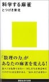
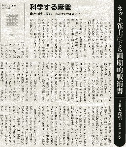

（６９）科学する麻雀
|

byとつげき東北 講談社新書/ISBN：4061497650/2004/12/18）
日本では麻雀伝来した当初から、さまざまな数理分析が行われている。この分野では日本の独擅場といってよい。そのハシリが、一向聴のさまざまな形態を分析した「一しゃん聴(菅野容夫)S6.5.25」
戦後では、「大型コンプータがはじきだした麻雀の常識を破る本（朝日ゲームサイエンスクラブ）S57.11.15」などがある。
もちろん単行本にならないまでも、多くの先人による諸論はゴマンとある。ましてやインターネットの世界では花盛り。しかし日本以外では、これほどの数理分析は行われていない。どうもこれが日本の国民性というものか？。
そんな中、インターネットの世界から飛び出したのが、ネット麻雀「東風荘」での豊富なデータをベースにしたこの本。全５章からなるが、σ(-_-)には序章の「なぜ彼らは曖昧なのか」、第１章の「データが麻雀を理性化する」が面白かった。
第２章「最強をめざす基礎理論」は、著者のデータ分析の考え方を記した箇所。第３章 「最強の麻雀講座」は、それらのデータを元にした戦術論。もちろんこの本のメイン。特に３章の後半は、貴重なデータ論。しかしせっかくのデータ戦術をすべてインプットしておくだけのメモリーもないカンピュータσ(-_-)。グラフや数式は手に負えなかった....
しょうがないから、「データはあくまで素材。どう扱うかは人さまざま」と開き直っておこう....
第４章「麻雀の思想的側面について」は流れや点数計算の話。短い章であるが、面白かった。
年に麻雀の本は何冊も出版されるが、書史に残るような本はめったにない。この「科学する麻雀」は、その「書史に残る」麻雀書。おまけに新書版なので\740−と廉価。せっかくなので、もう１冊買っておくことにした。
|
今週の週刊新潮。
その書評欄に、「科学する麻雀」が取り上げられていた（評者・大森望）。週刊新潮の書評の対象になるとはすごいな。 評者は麻雀大好きとのことで、やはりこの本のメインである第３章 「最強の麻雀講座」が面白かったよう。

上のコラムで書いたように、σ(-_-)は序章「なぜ彼らは曖昧なのか」と、第１章「データが麻雀を理性化する」が興味深かった。当たり前とはいえ、人によって、“面白いと思うポイント”が違うということが面白かった。
|
sam136 投稿日：2005/03/13(Sun)
お久しぶりです。
（といっても、最後に投稿したのがいつだか忘れてしまいましたが。）
「書壇」にあった「科学する麻雀」、読んでみました。
筆者の言わんとしていることはわかるのですが、（「同じ牌姿、同じ状況ならば、同じ行動をとれ」、
「捨て牌読みの大半は無意味である。」、「流れ」に関する批判など）データに基づく「最強の麻雀論」に関しては訳がわからなかったです。
某T大学工学系研究科の大学院に在籍してる麻雀好きな知り合いにこの本を渡して、翌日感想を聞いたところ、「知恵熱出て寝込んでる(-_-)」だそうで・・・。IQ140近い秀才でも、このザマです。実践できる人間はほんの一握りかと思います。
|
あさみ 投稿日：2005/03/14(Mon)
こんにちわ、sam136さん
この本を読んで、σ(-_-)も知恵熱がでました。もっともσ(-_-)のは、数式がチンプンカンプンだったせいですが。（^-^；
この本のメインコンテンツは、第３章「最強の麻雀論」と思いますが、その戦術論に対するσ(-_-)の感想は、「データはあくまで素材。どう扱うかは人さまざま」の一言に尽きます。
じっさい多量のデータを生かしたせっかくの戦術論も、σ(-_-)は「すべてインプットしておくだけのメモリーもないカンピュータ」なので、メインコンテンツである第３章より、序章「なぜ彼らは曖昧なのか」、第１章「データが麻雀を理性化する」、第４章「麻雀の思想的側面について」を面白く思った次第です。
しかしこのような麻雀の数理分析は、日本人のお家芸。そのお家芸をベースにした戦術書ということで、まさに日本人ならではの麻雀書と思う次第です。(^-^)
|